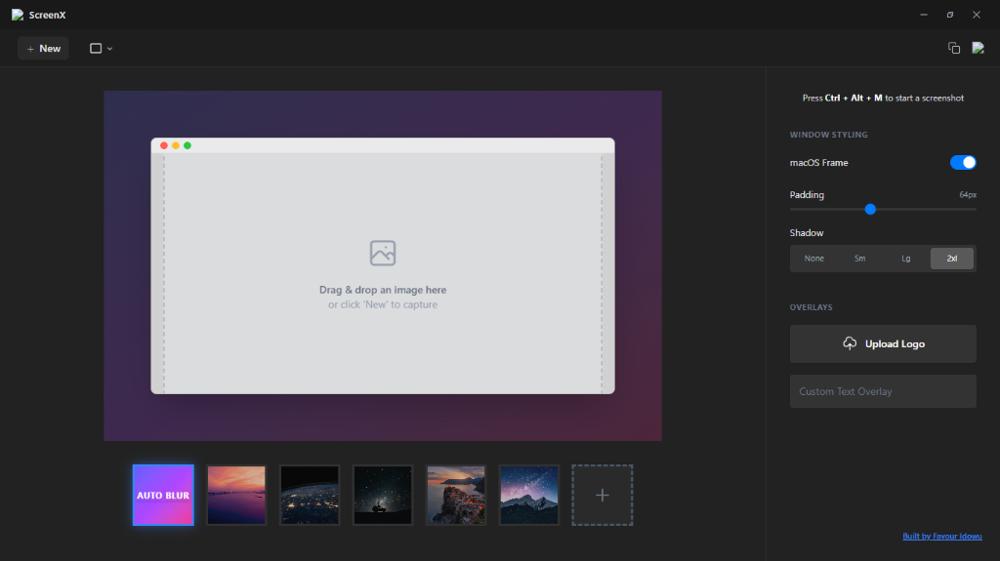

v1.0.0 Now Available
Stop sharing
ugly screenshots.
Instantly turn your Windows screen grabs into beautiful, presentation-ready images with gorgeous macOS-style glass frames. Zero bloated editors required.
